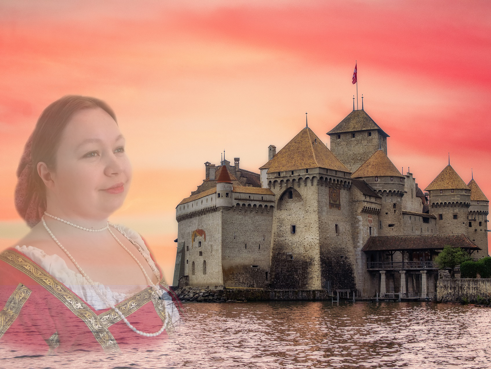

I am Anna Aslin, a fantasy romance author based in Tampere, Finland. I write fantasy books that blend romance, magic and immersive worlds, often drawing inspiration from historical settings such as pseudo-medieval and Victorian-inspired fantasy. Sometimes the stories contain darker themes, but they always have a hopeful core and a focus on relationships. I have also explored subgenres such as gothic fiction and steampunk.
I fell in love with fantastical stories early on. If a story had magic, dragons, witches, castles, or sword fights, it was exactly the kind of world I wanted to step into—and eventually to create myself. I began writing my first novel in my teens, though publishing took a little longer, as it often does: life happens.
Here you can explore my fantasy romance books, read text samples, and discover maps, characters and artwork from my worlds. If you enjoy fantasy stories filled with magic, relationships and adventure, you are in the right place. Do not forget to join my newsletter to receive updates on new releases and upcoming projects.